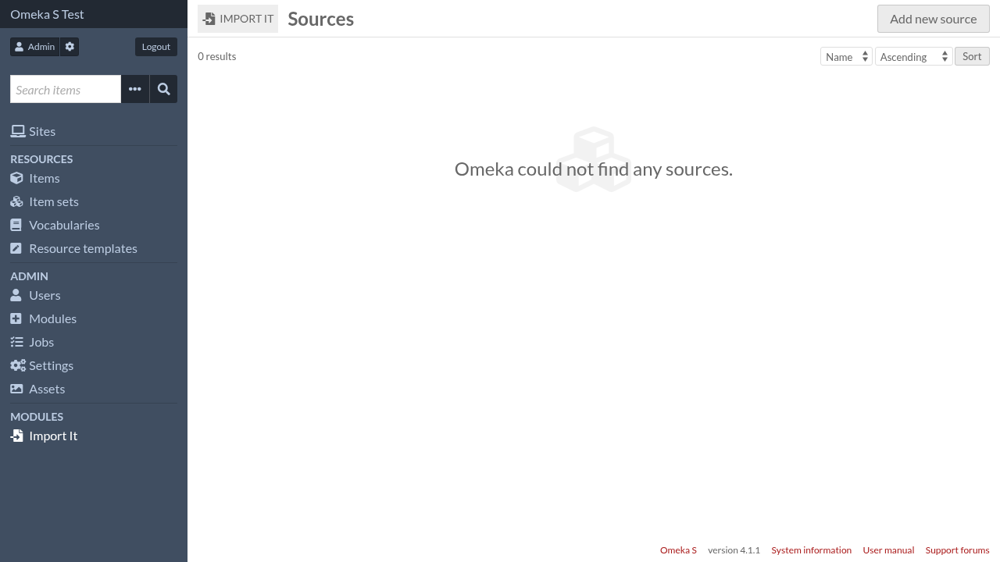
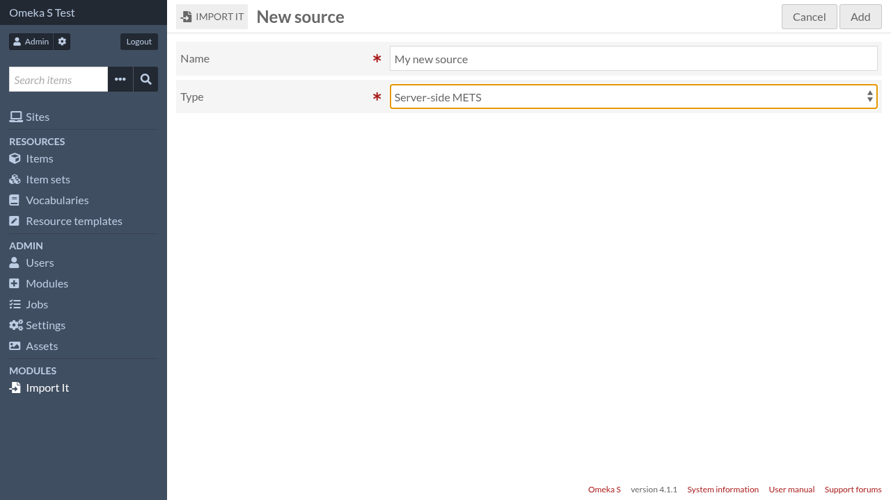
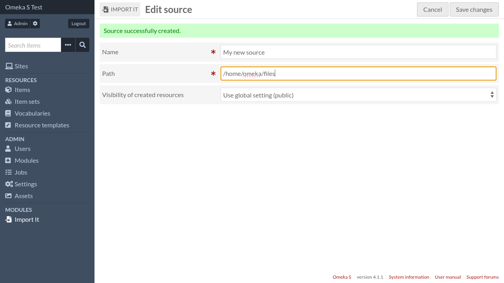

Sources
To be able to import resources, you need to declare a source. A source has a name, a type and several settings depending on its type. The source type dictates how resources are retrieved (whether it’s from a file, a URL, or something else) and transformed before being imported in Omeka.
You can have multiple sources of the same type.
Currently there is only one source type, Server-Side METS, which browses local METS files and creates corresponding items and media.
Create a source
To create a new source, click on “Import It” in the navigation menu.
Then click on the “Add new source” button.
Give the source a name and select its type, then click on the “Add” button.
Fill the type-specific settings, then click on the “Save changes” button.

For more details on type-specific settings, read the corresponding page in Source types.
Start import
Click on the import icon to go to the import settings form.

Once the settings are done, click on the “Start import” button.